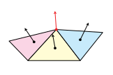

The Normal Vector
Compute the normal of a vertex by averaging the normals of all triangles adjacent to that vertex.

\[\V{n}_v = \frac{\V{n}_a+\V{n}_b+\V{n}_c}{\|\V{n}_a+\V{n}_b+\V{n}_c\|}\]
One final normalization of the sum of all normals merely ensures that the result has unit length.
With one normal for each vertex, the model looks smooth.
 |
 |